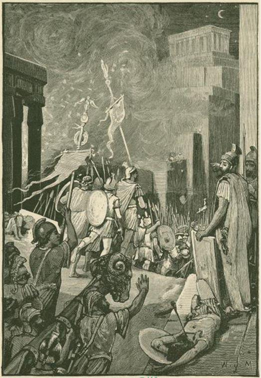

Comment la France s’apprête à subir la même fin que celle de Rome
par Grégory ROOSE
« Nous sommes en guerre »
Voici quelques mois seulement, la France entrait en confinement pour esquiver ce qui nous est présenté comme étant la plus grande menace pandémique depuis la terrible vague de choléra de 1832. Nous étions ainsi acculés dans nos logements par ce qui ne devait être rien d'autre qu'une « simple grippe » venue d'Asie. Face à l’impréparation du gouvernement Français en particulier, et des gouvernements occidentaux en général, contre le risque de pandémie, la France est entrée en guerre la fleur au fusil. « Nous sommes en guerre » a martelé à six reprises le président Macron lors de son allocution du 16 mars 2020 aux Français, abasourdis, sortis de leur torpeur de leur ataraxie sous perfusion médiatique. Depuis des années, ils sont bercés de futilités en futilités, concernés ou exaspérés par des revendications sociétales ultra-minoritaires : écriture inclusive, lutte contre les pseudo-inégalités et la discrimination, machin-phobies, égalitarisme à tous les étages... En évacuant ces sujets qui saturent habituellement l'espace médiatique, le Coronavirus a révélé la futilité de ces revendications subventionnées dont les Français sont nourris, le plus souvent de force, sans trêve ni répit.
Comment en sommes-nous arrivés là ? Le réveil fût difficile, la gueule de bois assurée pour des millions de Français qui ne voulaient croire qu'une menace réelle pourrait froisser le confort de leurs habitudes, la routine de leurs râleries gauloises sur des sujets le plus souvent futiles. Cette menace pandémique, à peine dévoilée, a eu le mérite de redonner une place médiatique au bon sens. Les « petites gens », ceux dont les métiers peuvent paraître transparents au quotidien, se sont enfin révélés, aux yeux des Français, pour ce qu'ils sont : absolument essentiel au bon fonctionnement de la société et, dans une certaine mesure, à la survie du pays.
On les respecte, on les a applaudis, mais pour l'heure, on les paie toujours au lance-pierre. On les voit désormais, mais on ne les écoute toujours pas. Le confinement nous a fait oublier l’espace de quelques mois, les menaces permanentes qui pèsent sur la France et l’Europe, et ce sont eux, infirmières, pompiers, policiers, petits commerçants, médecins de campagne, fonctionnaires de préfecture, caissières, qui sont également en première ligne face aux dérives quotidiennes de l'immigration massive ; menacés, souvent agressés et parfois remplacés dans leur travail, dans leur logement ou quartier par ces enfants de la nouvelle France, celle qui oublie son propre peuple pour mieux accueillir des fragments d'autres peuples qui n'ont aucune intention de s’assimiler, trop à l’aise au sein d’une diaspora qui ne demande qu’à prospérer.
Alors que les rues de France étaient quasi-désertes pendant le confinement, l'islam s'est rappelé au bon souvenir des Français confinés. Un Soudanais a perpétré une « attaque » au couteau, tuant deux Français dont l'un d’eux est mort devant les yeux de sa femme et de son fils. Thierry et Julien sont morts ce matin du 4 avril 2020 pour avoir croisé le regard d'un migrant soudanais qui hurlait « Allahu akbar » à Romans-sur-Isère alors qu'il enfonçait sa lame dans le ventre de ces mécréants incrédules. Cet acte de guerre n'a peut-être pas été coordonné, mais il n'a rien d'isolé. Il s'agit de l'énième « attaque au couteau » commise par un « déséquilibré », que les médias décrivaient jadis avec moins de précaution en nommant le réel : un attentat islamiste. Osons d'ailleurs le dire : islamique, l'islamisme n'étant pas l'enfant terrible de l'islam, mais son émanation la plus fidèle.
Ce soudanais, accueilli, nourri, formé par la France, bénéficiaire de nombreuses aides sociales, de la bienveillance mièvre des autorités locales, des associations pseudo-humanistes, des travailleurs sociaux et maintenant des médias, a tué sauvagement des Français innocents, car « aigri » à cause du confinement osera écrire la presse.
La nouvelle est terrible, les faits sont glaçants. Mais ils sont rapportés encore plus froidement par les médias, d'une manière insupportablement distante et comptable, sans être pour autant factuelle. On ne parle pas de sa religion qui a pourtant objectivement motivé son acte d'une violence aveugle en criant le désormais célèbre « Allahu Akbar », cri de guerre des terroristes islamistes. Pis, on pouvait lire dans la presse, malgré cette information capitale et factuelle, que les autorités, n'étaient toujours pas en mesure de déterminer les motivations de l'agresseur. Pourtant, le crime est signé. A-t-on parlé des appels à la prière lancés, en plein confinement, depuis le minaret de plusieurs mosquées en France et en Europe ? Peu de médias s’y sont risqués, et ceux qui l'ont fait ont tourné en dérision les esprits critiquent qui y voyaient une nouvelle étape de d'islamisation de l’Europe.
Les rares fois où un attentat est commis contre une mosquée, les médias sont capables de fournir les nom, prénom et pedigree du terroriste (et non pas de l'attaquant), et d'assurer qu'il existe un lien, même s'il n'est pas établi, avec un parti politique qu'ils classent à l'extrême-droite. Quand un individu maghrébin assassine plusieurs personnes dans la rue au cri d' « Allahu Akbar », fréquente assidûment une mosquée et lit le Coran, la presse nous affirme qu’il n’existe aucun lien avec l'Islam.
Quand un individu occidental commet un attentat contre la mosquée de Christchurch et que l'on retrouve un document qu'il a lui-même nommé Great Replacement, la presse accuse illico l'écrivain français Renaud Camus, auteur de ce qu'il conviendrait d'appeler le théorème, et non pas la théorie, du Grand Remplacement, d'être un odieux complotiste, suprémaciste blanc (sic), co-responsable de cette tuerie. Ils n'ont évidemment rien lu de cet écrivain qui place la non-violence, qu'il nomme innocence, au cœur de sa pensée. Ils n'ont certainement pas davantage lu le Coran, qui place la violence contre les infidèles au cœur de sa doctrine, mais aiment se dresser en défenseur de cette « religion de paix et d'amour » dont ils ne connaissent rien, pour nombre d'entre eux.
Ce nouvel épisode de violence migratoire et islamique, qui intervenait alors que la France avait un besoin vital de concorde, a finalement assez peu fait réagir la classe politique, à l’exclusion d'une partie de l'opposition, une fois n'est pas coutume. Cette apathie devant le péril migratoire est le reflet du déni dans lequel s'est enfermée une grande partie de la classe politique et des médias. Le déni des méfaits de l'immigration massive, de l'islamisation passive de notre société. Le déni d'un laisser-faire, d'un laisser-aller, d'un passe-droit offert à une certaine catégorie de la population, celle qui ne ressent plus la fierté d'être Français, fut-elle de papier. Elle préfère, de loin, revendiquer ses origines étrangères, interdisant les rares individus méritant à l’ethnie similaire de se libérer du joug de la religion, du lien ethnique qui les lie avec leur diaspora pour vivre pleinement le défi enivrant de l'assimilation.
Dans un monde normal, ces assassinats sur fond de croyance religieuse devraient scandaliser l'opinion publique et faire réagir la classe politique. Mais la première est endormie et la seconde semble soumise, bien que consciente de la réalité, cette dernière étant potentiellement explosive si elle était relevée aux yeux de tous.
Quelle est cette réalité ? En janvier 2020, un rapport de la DGSI classé secret-défense, mais qui a fuité dans la presse, dévoile que des centaines de quartiers sont tenus par des islamistes, dans les grandes villes françaises, mais également dans la France rurale comme en Haute-Savoie ou dans l’Ain, à Annemasse, Bourg-en-Bresse, Oyonnax ou encore Bourgoin-Jallieu.
Le 26 juin 2019, un rapport parlementaire sur « les services publics face à la radicalisation » rend des conclusions édifiantes sur l'état de la radicalisation islamiste dans la fonction publique française. Entre autres témoignages, le rapport révèle qu'à la RATP « des locaux sont interdits aux femmes dans des terminus », que « des musulmans pratiquants sont en train de cibler des femmes croyantes non-pratiquantes ». Des fonctionnaires de police expliquent leur difficulté à révoquer des agents de police radicalisés, faute d'arsenal législatif adapté. Un officier sapeurs-pompiers affirme que certaines interventions deviennent compliquées, puisqu'on lui interdit régulièrement de pénétrer dans une pièce occupée par des femmes et même de porter assistance à une femme sous prétexte qu'il est un homme.
L'administration française est capable de savoir quel pourcentage de la population pratique le yoga régulièrement, mange bio, est férue de modélisme, mais s'avère incapable de dénombrer les musulmans qui vivent en France, avec ou sans la nationalité française. Selon une estimation de François Héran datée de 2017, il y aurait environ 8,4 millions de musulmans en France. Ce chiffre est cependant contesté et contestable, les statistiques ethniques n'étant pas pratiquées en France. Néanmoins, d'autres études confirment le degré important d'islamisation de la France. Selon le très sérieux think tank américain Pew research, la France, accueille la première communauté musulmane d'Europe. Il estime par ailleurs que si le flux de migrants continuait à grossir les rangs des musulmans déjà installés en France, ces derniers atteindraient 13,2 millions d'individus, soit 18 % de la population, à l'échéance 2050. En 2016, l'Europe comptait 25,8 millions de musulmans, soit 4,9 % de la population, selon le think tank américain.
L'énumération de chiffres, projections et témoignages indiquant le haut degré d'incursion islamique en France en particulier et en occident en général pourrait continuer s'étaler sur de longues pages. Ces derniers éléments éclaireront cependant le lecteur laissé sceptique ou incrédule par les informations évoquées précédemment. Dans une interview accordée au “Point” le 18 septembre 2019, Jérôme Fourquet (Ifop), auteur de L'Archipel français, livrait d'inquiétant chiffres d'une étude menée par l'institut de sondage sur les musulmans de France. L'étude révèle qu'en moyenne, 18 % des musulmans français de naissance estiment que la charia devrait s'imposer. Une proportion qui monte à 26% chez les musulmans français par acquisition, et à 46% chez les étrangers musulmans vivant en France. « Cette revendication d'une suprématie de la charia est donc d'abord portée par les nouveaux arrivants qui viennent de pays où l'empreinte de l'islam est très forte », analyse le politologue qui confirme qu'il existe un lien fort entre immigration et islamisation. L'étude indique également que les femmes musulmanes portent davantage le voile islamique qu'en 2003 (33% en 2019 contre 24 % en 2003) et que 19% des françaises musulmanes le portent en permanence. L'enseignement le plus intéressant de cette étude est que 59 % des musulmans estiment que la pratique de l'islam n'a pas à s'adapter pour se conformer à la laïcité à la française. Cette réalité, évoquée en quelques chiffres, est le plus souvent occultée par les médias. De son côté, la classe politique préfère entretenir le déni de la menace qui pèse sur notre pays plutôt que de l’affronter au risque de faire basculer notre société dans un conflit dont l’issue est incertaine. Les Romains ont fait cette erreur. Notre civilisation les poursuit sur ce chemin périlleux.
Les Romains ont disparu sous le joug de la pression migratoire
Les citations déplorant l’incapacité des hommes à tirer les leçons de l’Histoire sont pléthore. La décadence et la disparition de l’Empire romain ont fait l’objet de tant de livres et d’analyses, dont le célèbre ouvrage en treize tomes de Gibbon, que l'essentiel s'y est noyé. Pourtant, les similitudes entre l'état de déclassement du monde occidental face à de nouvelles puissances économiques, politiques, religieuses ou culturelles, sa fragilité démographique, sa propension à accueillir des fragments de peuples étrangers sans aucun espoir d'assimilation à leur terre d'accueil font écho aux dernières heures d'un empire qui régna plus de 1000 ans sur le monde, depuis la naissance de Rome en 753 av JC sur les berges du Tibre à la mort de l'empire romain d'occident, le 4 septembre 476, après une longue période de décadence et d'agonie.
A son apogée, en 117 après J.-C., Rome maîtrisait tous les territoires du bassin méditerranéen, imposant sa marque sur des peuples et des cultures diverses, depuis la Grande-Bretagne à l’Égypte en passant par la Mésopotamie. Rome régnait alors sur un territoire de 5 millions de km2 et une population de 60 à 80 millions de personnes avant de sombrer inexorablement dans des siècles de déni et de décadence qui entraîneront sa chute.
Selon le célèbre adage populaire, Rome ne s'est pas faite en un jour. Pour parvenir au fait de sa puissance, elle a dû venir à bout de nombreux ennemis, parmi lesquels Carthage fut sans doute le plus célèbre et le plus menaçant.
En 117, Rome était à l'apogée d'une puissance qui, déjà, montrait les premiers signes de faiblesse d'une baudruche qui avait trop gonflé et rendu très sensible sa membrane protectrice. Ses 10 000 km de frontières rendent compliquée la défense de l'Empire, notamment contre les assauts quasi permanents des tribus germaniques venues d’Europe centrale. Rome a donc assez naturellement rompu, sous Hadrien, avec sa politique expansionniste, pour se concentrer sur la défense et le confortement de son empire.
Trois siècles plus tôt, elle détruisait un terrible ennemi qui menaçait sa survie. Trois siècles plus tard, Rome disparaîtra par péché d'universalisme romain.
La victoire romaine s'est traduite par la destruction totale de Carthage en 146 avant JC. Quand la première guerre punique a éclaté, en 264 avant J-C, Rome et Carthage étaient deux puissances montantes qui se menaçaient l'une et l'autre. Roma dominait la péninsule italienne, tandis que Carthage, puissante cité-État du nord de l'Afrique, s'était imposée comme la première puissance maritime du monde. La destruction de cet ennemi, engagé au cours de la troisième guerre punique, est le résultat des efforts du sénateur romain Caton l'Ancien qui avait convaincu le Sénat que Carthage, même affaiblie, était une menace permanente pour la suprématie de Rome.
Sa méthode simple et désormais historique, se résumait à une formule oratoire latine qu'il prononçait en guise de conclusion de tous ses discours afin de pousser à la guerre :
Ceterum autem censeo Carthaginem esse delendam, ce qui signifie, en français, « En outre, je considère que Carthage doit être détruit »). Cette locution a souvent été abrégée en Carthago delenda est ou simplement Carthago delenda qui signifie « Carthage doit être détruit » ou encore « Il faut détruire Carthage ».
Carthago Delenda. Deux mots qui font écho, depuis le tréfonds du temps, au rugissement d’un peuple qui aspire à sa survie, à son entêtement à vaincre un ennemi qui menace son existence. Deux mots qui nous rappellent également que malgré la destruction de Carthage, ennemi séculaire, Rome n’a pu échapper au même destin. Carthage, l’ennemi de l’extérieur, cristallisait les craintes et les ambitions de Rome. Mais son véritable adversaire, celui qu’elle ne voyait pas ou ne voulait pas voir, évoluait sous de multiples formes à l’intérieur même de la société romaine : déclin de la puissance militaire et économique, décadence des mœurs, influence croissante de l’immigration barbare à l’intérieur et aux marches de l’Empire.
Il existe au moins cinq grandes similitudes entre les raisons qui ont provoqué la chute de l'empire romain et les difficultés auxquelles doivent faire face la France et l'Occident.
D’abord, la crise financière, les difficultés économiques et le manque de main-d'œuvre. Si Rome était attaquée de l'extérieur, elle était notamment très affaiblie de l'intérieur à cause d'une grave crise financière. Les guerres permanentes et les dépenses excessives ont considérablement affectés les capacités de l'empire à se régénérer financièrement, et une fiscalité forte, couplée à une inflation grandissante, ont creusé l'écart entre riches et pauvres. Le partage de la souveraineté fut fatal à Rome. La division de l’'empire entre L'Empire romain d'Occident, dont le siège était à Milan, et L'Empire romain d'Orient, à Byzance, l’a rendu plus facilement gouvernable à court terme, mais les deux moitiés n'ont pas réussi à travailler ensemble de manière adéquate pour lutter contre les menaces extérieures, et se disputaient souvent les ressources et l'aide militaire.
L'essor d'une nouvelle religion et la perte des valeurs traditionnelles ont également accéléré le déclin de Rome qui a concordé avec la propagation du christianisme qui a contribué à la chute de l'empire. L'édit de Milan a légalisé le christianisme en 313, et il est devenu la religion d'État en 380. Ces décrets ont mis fin à des siècles de persécution, mais ils ont également érodé le système de valeurs romain traditionnel. Les pandémies ont également fragilisé l’Empire romain, très urbanisé et interconnecté, ce qui facilitait la circulation des microbes, virus et bactéries. L'arrivée de nouveaux germes capables de provoquer des pandémies a secoué l’empire à trois reprises par des pestes meurtrières.
Ces difficultés ne rappellent-elles pas les crises économiques que traversent la France et l'UE, couplée à un manque de main d’œuvre que les ressortissants des anciennes colonies sont venus combler dans un premier temps avant de profiter des largesses du système social français ? La situation de Rome rappelle également ce transfert de la puissance occidentale qui a lentement glissé de l'Europe vers les États-Unis au sortir des deux guerres mondiales ? Celui de la souveraineté de la France avec l'UE et, dans une certaine mesure, avec l'Allemagne ?
L'avènement du christianisme et la perte des valeurs traditionnelles romaines sont à mettre en parallèle avec celui de l'islam et de son allié le progressisme qui a les traditions en horreur et nie le passé.
Enfin, la multiplication des crises sanitaires fait écho avec celle que le monde vient de connaître, avec le covid-19, et qui, si elle n’a pas eu les mêmes conséquences dramatiques sur la démographie grâce aux avancées scientifiques et aux moyens modernes de protection des populations, a déjà commencé à creuser les inégalités économiques et industrielles au niveau mondial, d’où sortent déjà des gagnants à l’est et des perdants à l’ouest. Mais, au-delà de cette concaténation de causes multiples » qui ont causé la perte de l’empire romain, comme l'écrivait Paul Veyne, c’est la politique migratoire incontrôlée, l’échec de la politique d’assimilation des étrangers qui ont causé sa perte.
L’immigration massive causa la perte de l’empire romain
En 376, un nombre ingérable de Goths et d'autres personnes non-romaines, fuyant les Huns, entrèrent dans l'Empire. Les forces armées de l'Empire occidental sont devenues peu nombreuses et inefficaces, et malgré de brèves récupérations sous des chefs compétents, le pouvoir central n'a jamais été efficacement consolidé. En 476, l'empereur romain occidental détenait un pouvoir militaire, politique ou financier négligeable et n'avait aucun contrôle effectif sur les domaines occidentaux dispersés qui pouvaient encore être décrits comme romains. Les royaumes barbares avaient établi leur propre pouvoir dans une grande partie de la région de l'Empire occidental. En 476, Odoacer déposa le dernier empereur d'Italie et le Sénat occidental envoya l'insigne impérial à l'empereur d'Orient. La France et l’Europe, héritières de l’Empire romain, commettent les mêmes erreurs, à un rythme qui pourrait causer leur chute rapidement.
Considérée pourtant comme «une immigration salutaire», comme l’affirmait en 2008 la directrice générale du Palazzo Grassi qui avait organisé à Venise une exposition sur Rome et les Barbares, cette invasion progressive, accompagnée par le pouvoir, a précipité la chute de l’Empire romain. Le deuxième sac de Rome, en 410, a été facilité par des années de délitement sociétal et identitaire sous le poids d’une immigration barbare incontrôlée, devenue incontrôlable.
« Une ruée d’immigrants venue de pays sous-développés »
Les invasions barbares ont achevé de détruire l’Empire romain, puissant et millénaire. Mais ces incursions ne sont pas des attaques perpétuelles et destructrices, ni même des campagnes systématiques de conquête. Il s’agissait plutôt d’une sorte de « ruée d’immigrants venus des pays sous-développés du Nord vers les riches terres méditerranéennes », affirme l’historien irlandais Peter Brown, spécialiste de l’histoire romaine et de l’Antiquité tardive. Cette « ruée d’immigrants venue de pays sous-développés » n’avait pas le projet de détruire l’Empire romain. Ils voulaient simplement profiter et s’emparer des richesses produites par cette civilisation, « faute d’avoir été capables d’adopter les disciplines qui en avaient permis la production, et ils en provoquèrent, par leur irruption violente, la dislocation ».
Ces influences réciproques n’ont en rien désarmé la violence de la confrontation. Car le point décisif est que Rome avait montré sa faiblesse en admettant sur son territoire des peuples qu’elle n’avait pas été capable de soumettre et qu’elle avait régularisé leur présence sans les avoir vaincus sur le terrain1.
Nous y sommes
Un esprit contradicteur pourrait être tenté de répliquer que les enjeux que doit relever une civilisation sont de multiples ordres : économique, culturel, financier, écologique, scientifique, agricole, etc. Il aurait raison. Mais tous ces enjeux doivent être considérés comme secondaires si le socle même d’une civilisation, c’est-à-dire son identité, est menacé de péril. Agir sur ces champs est vain si la civilisation est menacée, si son organisation, sa structure et son devenir risquent la disparition.
La France millénaire, l’Europe, l’Occident, subissent depuis plusieurs décennies les incursions permanentes d’immigrants majoritairement africains mus par l’espoir d’une vie meilleure que celle offerte dans leur pays d’origine. La richesse de l’Occident, son confort de vie et son inaptitude à protéger ses frontières sont autant de motifs d’y pénétrer pour le quidam allogène désirant rejoindre l’Occident « riche et privilégié » à peu de frais.
Incapable de contrôler l’immigration et de faire respecter son intégrité territoriale, la France et au-delà, l’Europe, envoient un signal de faiblesse potentiellement fatal à long terme.
La France ne peut pas assimiler des millions d’individus qui ne voient en elle qu’un pays étranger où l’on peut vivre comme chez soi
Le problème de l’immigration, c’est d’abord et surtout le nombre. Qui se plaindrait d’une France culturellement enrichie d’un folklore venu d’ailleurs, dont les représentants seraient tellement peu nombreux qu’il faille aller gaiement à la rencontre de cette diversité plutôt qu’elle ne s’impose d’elle-même dans l’espace public, massivement, agressivement, partout et tout le temps ?
La nation française avait la capacité d’absorber une partie limitée d’immigration extra-occidentale, désireuse de se fondre dans le creuset national au prix d’une reconstruction identitaire, gage d’une assimilation rendue possible. Mais la France ne peut pas assimiler des millions d’individus qui ne voient en elle qu’un pays étranger où l’on peut vivre comme chez soi.
L’importance des flux migratoires composés d’individus extra-européens aux mœurs radicalement étrangères aux nôtres et aux motivations principalement économiques a provoqué la formation de diasporas dans les grandes villes et leur banlieue dès les années 1960. Depuis, ces flux se répandent dans les villes moyennes et dans les villages de France et d’Europe. Le communautarisme « ethnique », qui impacte la géographie du territoire, est la réaction spontanée de cette assimilation non-désirée à une nation qui ne représente, pour nombre de Français d’opportunité, rien d’autre qu’un confort matériel, qu’une terre de résidence ne méritant ni reconnaissance ni respect.
Communautarisme, cohabitation forcée et islamisation
Dans ces conditions, les Français de souche, à qui la doxa politico-médiatique refuse ce qualificatif correspondant pourtant à une réalité historique et génétique, sont contraints de cohabiter avec des individus reproduisant le mode de vie d’un pays qu’ils ont quitté, imposant à l’autochtone de se soumettre à ses contraintes et usages culturo-religieux, sous peine d’être marqués du sceau de l’intolérance et du racisme, synonyme de bannissement social, dans son propre pays.
Au communautarisme ethnique, qui annihile les chances d’assimilation des immigrés et enfants d’immigrés dans notre pays, s’ajoute le problème de l’Islam, système politico-religieux dont la finalité ultime est de dominer le monde, qu’il divise en deux parties : le Dar al-Islam ou « domaine de la soumission à Dieu » et Dar al-Harb, le « domaine de la guerre ». Tant que son islamisation ne sera pas parfaite, la France appartient au Dar al-Harb.
Les statistiques ethniques et religieuses n’existent pas en France. Mais les évaluations, notamment fondées sur des marqueurs identitaires tels que l’attribution de prénom arabo-musulmans, permettent d’évaluer l’explosion du nombre de naissance liées à l’immigration musulmane en quelques décennies. Ainsi, l’analyse de l’octroi de prénoms musulmans pour les naissances en France révèle qu’un enfant sur cinq, né en 2017, portait un prénom musulman, soit 20 % des naissances en France. Ce taux était de 6,5% en 1997.
Il est impossible de connaître le nombre exact de musulmans vivant en France. Ce qui est néanmoins possible de dire, c’est que la caste politico-médiatique nous impose la fourchette dogmatique et constante de 4 à 6 millions de musulmans depuis les années 1990, ce qui apparaît comme étant démographiquement, sociologiquement et mathématiquement impossible.
Islamisation de la France irréversible d’ici 2050
Le 11 septembre 2018, Ahmet Ogras, président du Conseil français du culte musulman (CFCM), déclarait sur Radio France Maghreb 2 « Aujourd’hui, nous avons plus de dix millions de musulmans en France. ». Quelques semaines plus tôt, le 22 juin 2018, Nikoletta Incze, chercheuse au Center for Study of Political Islam, annonçait à la télévision publique hongroise, en s’appuyant sur une étude de Harvard, le seuil au-delà duquel l’islamisation d’un pays devenait irréversible :« l’islamisation d’un pays est irréversible si la population musulmane atteint 16% ».
Selon une étude du très sérieux institut de recherche américain Pew, reconnu pour ses recherches en matière de démographie religieuse, la France est le pays européen qui compte le plus de musulmans. La proportion variera, selon les hypothèses, de 12,7 % à 18 % de la population nationale en 2050. L’islamisation de la France serait donc, d’après ces chiffres, irréversible en d’ici 30 ans.
Le problème central pour l’Occident n’est pas le fondamentalisme islamique. C’est l’islam, civilisation différente dont les représentants sont convaincus de la supériorité de leur culture et obsédés par l’infériorité de leur puissance2.
Inutile d’attendre 2050 pour constater l’islamisation déjà bien engagée de notre pays. Les vagues d’immigration successives que subissent la France et les Français depuis les années 1960 bouleversent la physionomie de nos rues, de nos étals, portent atteinte à nos coutumes, nos traditions, nos libertés individuelles. Par souci d’apaisement et d’égalitarisme avec nos nouveaux voisins de l’intérieur, la classe politique se plie progressivement à cette revendication incongrue qui consiste à vouloir vivre en France comme on vit en Afrique centrale ou au Maghreb, ne manquant pas de culpabiliser, voire de punir, quiconque verra cette inflexion culturelle et cultuelle d’un œil critique.
Paris en « France »
Le dénominateur commun des communautarismes est le rejet de toute forme d’assimilation culturelle
Dans le paysage politico-médiatique, la mièvrerie égalitariste supplante le bon sens et l’instinct de survie, légitimement égoïste, de notre civilisation menacée de l’intérieur par une immigration hétérogène mais qui trouve néanmoins, dans l’opposition au concept d’assimilation, un motif pour faire converger leurs intérêts respectifs en faisant survivre leur culture originelle dans leur pays d’accueil, parfois même après trois générations de résidence en France. Le dénominateur commun des communautarismes est le rejet de toute forme d’assimilation culturelle.
Une partie des autochtones encourage par ailleurs ces nouveaux arrivants à refuser leur assimilation, à revendiquer leur droit d’imposer leur culture d’origine dans le pays d’accueil, celui-ci devant mettre la sienne en retrait au nom d’un principe maintes fois détourné et dévoyé : les Droits de l’Homme.
Rome périt de n’avoir su imposer ses lois et ses dogmes à une population étrangère, de plus en plus nombreuse, qu’elle accueillait en son sein. Le même destin funeste nous guette, nous Français, nous Européens, nous Occidentaux. Davantage, il guette nos enfants, ceux qui ne s’inscriront pas idéologiquement dans un système-monde ou le concept de nation, de lien à la terre, aux anciens, au passé est la racine de tout avenir. Ceux pour qui le mos majorum est le socle d’une vie sur terre, notre terre. Ceux pour qui la vie ne se résumera pas à jouer aux apprentis sorciers de la finance, déracinés, vagabondant d’aéroports en salles de marché dans un village global ou toutes les villes se ressemblent : cosmopolites, menaçant les identités et les cultures forgées par des millénaires d’histoire.
A l’échelle du monde, la diversité des peuples est une richesse. A celle d’un pays, la Diversité est un poison qui détruit l’identité de son hôte.
Notre France se délite. Elle se dissout lentement dans un magma multiculturel, soumise aux exigences de communautarismes religieux, ethniques, sexuels auxquels elle accède néanmoins pour démontrer au monde sa vertu et sa tolérance qui la caractérisent depuis 1789.
Nous avons un choix individuel et collectif à faire. Le sursaut ou le soubresaut
Le sursaut implique lucidité, courage et sacrifice. Le soubresaut sera nourri de notre léthargie, de nos inconséquence, lâcheté et aveuglement collectifs face à l’insidieux processus de soumission de notre société à l’immigration de masse, au système politico-religieux qu’est l’islam, face à la montée des communautarismes et au Grand Renoncement collectif devant ces menaces.
Le sursaut, qui précède la renaissance, ou le soubresaut qui précède la mort.
Agir ou laisser faire.
Survire, ou mourir.
G.R.
NOTES ET RÉFÉRENCES
1. Michel De Jaeghere, historien, Auteur de Les derniers jours : La fin de l’empire romain d’Occident
2. Samuel Huntington in Le choc des civilisations (the clash of civilisations) (1996), édition odile jacob, 2007, p. 239
Partager cette page